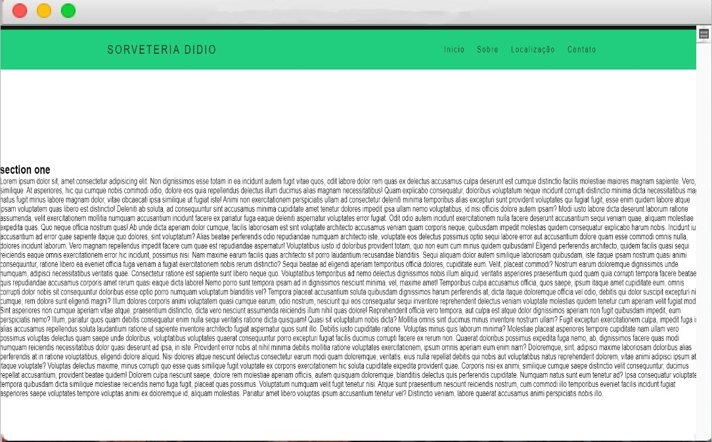
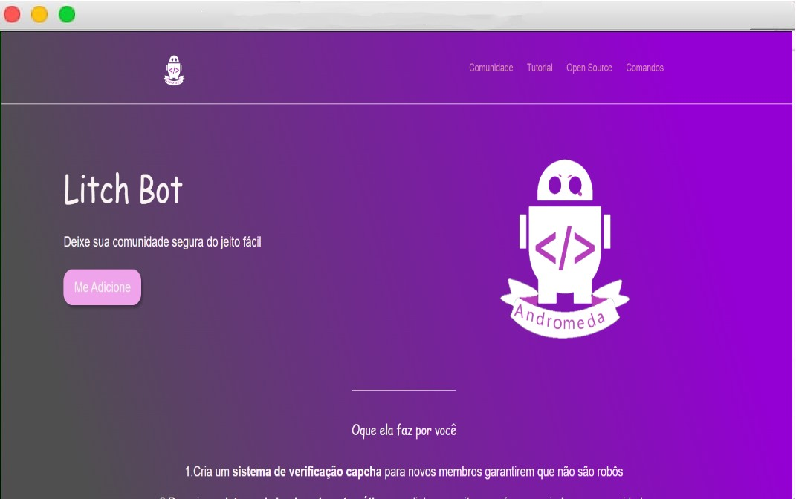
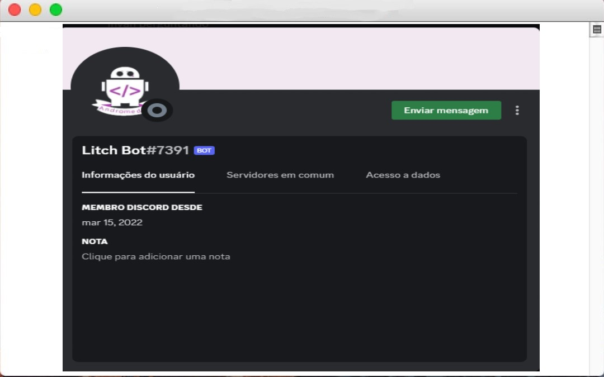
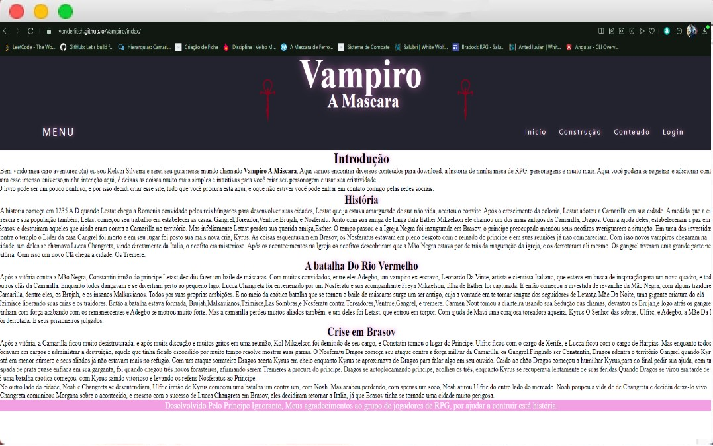
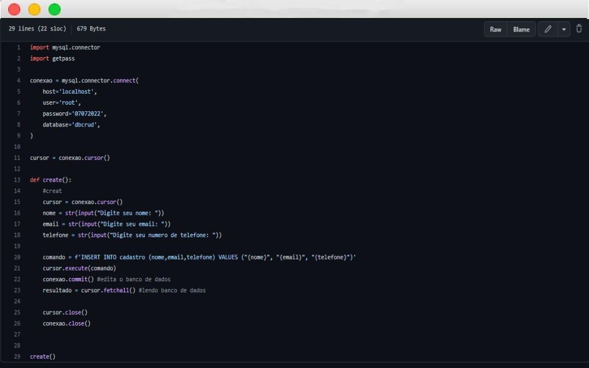
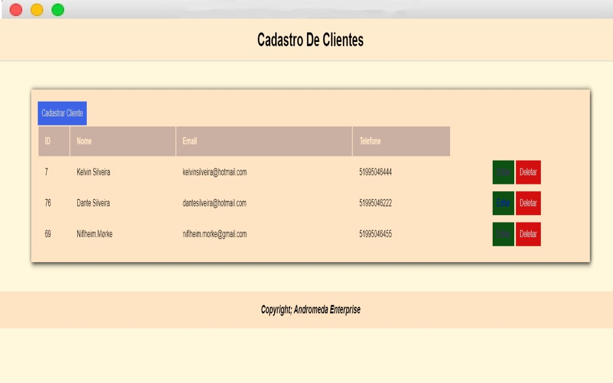
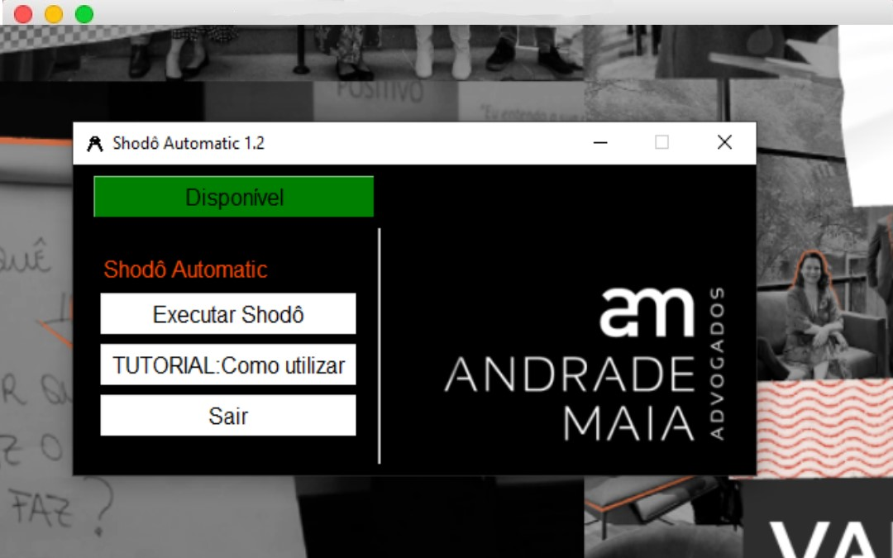
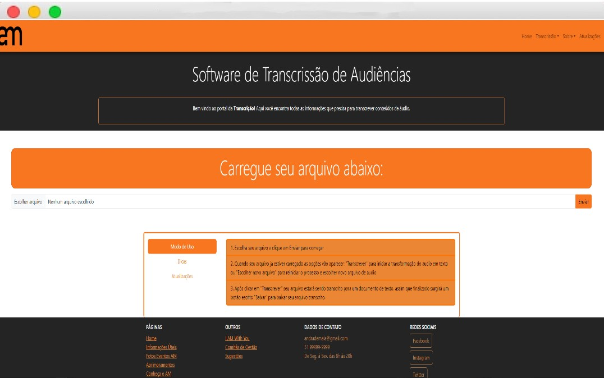

Sorveteria
Foi meu primeiro projeto para testes, junto com meus antigos colegas de trabalho para oferecer para uma sorveteria, eu fiz alguns testes de responsividade, fluiu bem. De toda forma o projeto foi engavetado de minha parte e terminamos de fazer o site mo GitHub de meu colega, sem colaboradores.
Bot Discord
Este site foi feito para baixar e explicar o meu Bot do Discord.
Bot Discord
Até o momento o projeto está engavetado, tive algumas fificuldades em ralação a typescript, mas o projeto está em um caminho muito interessante, e de certo modo bem avançado. Mas irei voltar nele e aprender type script para terminá-lo.
Site RPG
Site para o RPG de mesa que jogo, no fim não fiz responsividade com mobile, mas pretendo fazer um novo projeto de site de RPG com responsividade, ou talvez até utilize esse mesmo, utilizei JavaScript e HTML e CSS.
CRUD Python
Meu primeiro CRUD, Creat, Read, Update e Delete. Fiz com python que tinha mais familiaridade, tive poucas dificuldades, foi mais fácil do que eu imaginava, e foi bem divertido. Porém ele não contém uma interface.
CRUD WAMP
Nesse projeto eu utilizei o WAMP, Windows, Apache, Mysql e PHP para fazer CRUD com uma interface. Foi bem difícil esse projeto para mim, demorei em torno de uma semana, esrudando e vendo videos, para alcançar meu objetivo e ao mesmo tempo fazer um projeto com a minha identidade. Não dominei, por completo as ferramentas, porém me identifiquei bastante com MSQL, realmente foi muito divetido, e gratificante no final. Mas segue os estudos para mais implementos e desenvolvimento.
Projeto Shodô Automatic
Este projeto foi um desafio, Tinha acabado de entrar na empresa Andrade Maia Advogados, e eles precisavam acessar o Shodô nos servidores, porém o acesso tinha que ser limitado, já que outras pessoas precisavam acessar o assinador. Então o pessoal queria contratar uma empresa para fazer o trabalho, e eu como um bom Dev, me meti no assunto e decidi desenvolver o meu "filho" Shodo Automatic, foram mesês de testes nos servidores e algumas versões que eu lancei. E consegui chegar no resultado que queria, com uma interface de fácil entendimento e com um tutorial, de como utilizar em video. Foi um projeto de muito orgulho meu, e está disponível no GitHub.
Projeto Transcrissor
Este projeto era uma necessidade dos advogados do AM, onde tinham que ouvir toda uma audiência para trabalhar, muitas vezes reiniciando o áudio para pegar uma parte específica para o trabalho. Então eu e o time de Dev's do AM iniciamos o projeto de criar um Transcrissor de audiências, onde o objetivo era transcrever um áudio para texto. Neste projeto eu fui o Project Owner, e comandei o Desenvolvimento com outros 3 desenvolvedores. Utilizamos a API da Google, Speech To Text para desenvolver o produto. Junto com a biblioteca Flask para criar o site hospedado via Local. O print a seguir é do nosso piloto, inlusive desenvolvemos uma Front-End mais moderno e com algumas funcionalidades novas. Mas o projeto em si foi um sucesso e ainda estamos trabalhando nele neste momento, e o aprimorando. Infelizmente esse é um projeto Privado e o acesso ao código é restrito. Mas qualquer interesse no mesmo, por favor me contactar.
